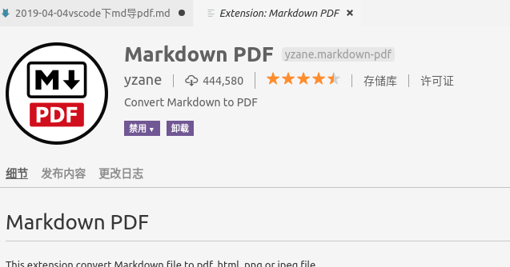
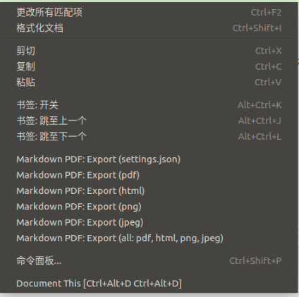
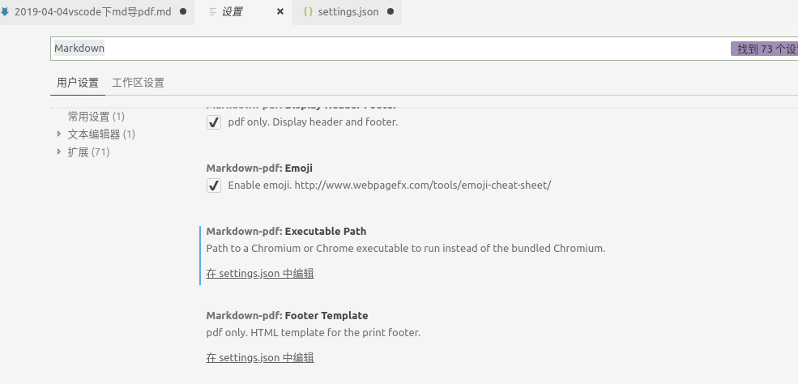

记录一下通过vscode转md导成pdf的方法
背景
用md写文档已经渐渐成为习惯，尤其可以通过hexo，直接发布成博客。
造成的问题呢，很多文档并不是博客，比如会议纪要、工作的一些记录，写成md分享给非技术人员看，并不太合适，尤其有图片的时候，于是就想用md转成pdf。
Markdown Pdf插件安装
从扩展中安装Markdown Pdf

安装成功后，可以在md文件中右键看到如下菜单

配置
看到很多介绍，说到这里就可以直接点击导出就能成功，但在我机器上并没有成功。
点击后，发现没有任何反应，最初以为是导出的目录可能不对，搜索了一下，发现可以通过markdown-pdf.outputDirectory的方式来配置导出的目录，于是进行了设置，发现还是没反应
我注意到每次启动时，vscode坐下脚的提示中，总在install chromium，于是就有数了，这个Markdown Pdf其实是调用了chromium的接口来完成转换的。也是就看一下这个插件的配置。如下

由于本机上有chromium浏览器，就whereis chromium-browser，然后在进行了配置，在settings.json中增加：
1 | "markdown-pdf.executablePath": "/usr/bin/chromium-browser" |
重试，导出成功。